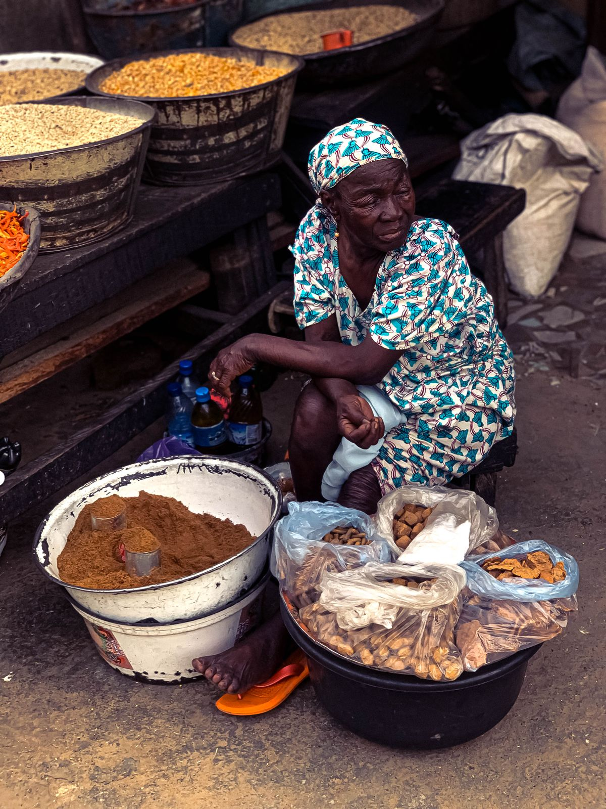

West Africa
Tomato and pepper stews, rice dishes and pounded staples like fufu, with plenty of scotch bonnet heat.
Nigeria · Ghana · Senegal · Côte d'Ivoire
Explore West Africa →Africa has 54 countries and thousands of food traditions. Climate, crops, trade routes and history have shaped very different kitchens. Rice and fiery stews dominate the West, couscous and warm spices the North, and teff, plantains and leafy stews the East.

Tomato and pepper stews, rice dishes and pounded staples like fufu, with plenty of scotch bonnet heat.
Nigeria · Ghana · Senegal · Côte d'Ivoire
Explore West Africa →
Steamed couscous, slow-cooked tagines, olives, dates and fragrant blends like ras el hanout.
Morocco · Algeria · Tunisia · Egypt
Explore North Africa →
Fermented teff injera, berbere-spiced stews, plantains and leafy dishes like Rwandan isombe.
Ethiopia · Rwanda · Kenya · Tanzania
Explore East Africa →Known for braai (barbecue) culture, maize porridge such as pap and sadza, and dishes shaped by many cultures, like Durban's Bunny Chow.
A land of rainforest ingredients: cassava, plantain, groundnuts and leafy greens, often slow-cooked in rich palm-oil sauces such as moambe.